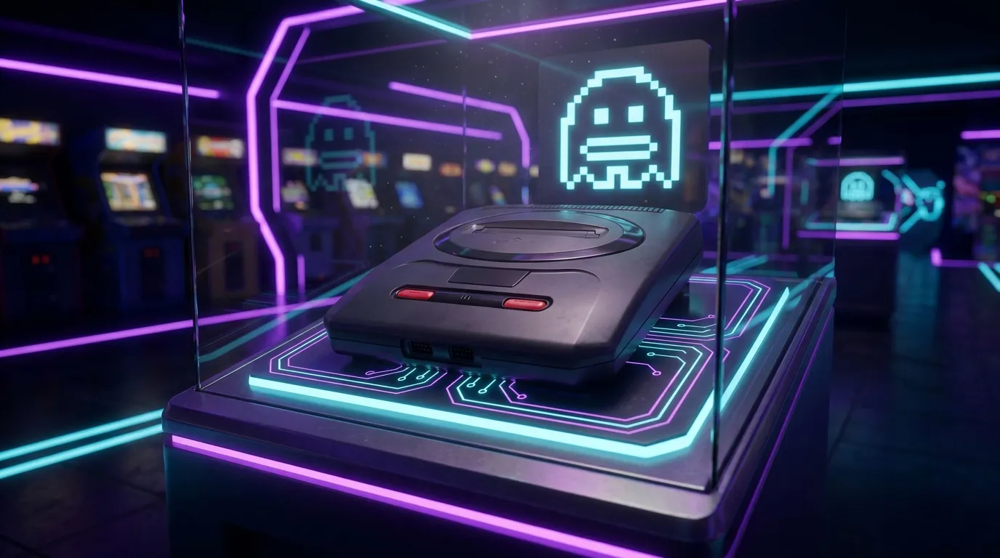

1992

SEGA MEGA DRIVE 2
ARCHITECTURE // 16-BIT
Une refonte élégante de l'original emblématique, concentrant la même puissance de traitement dans un format plus compact et aérodynamique qui a défini la pointe du jeu des années 90.
ÉPOQUE
16-BIT